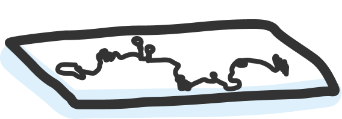
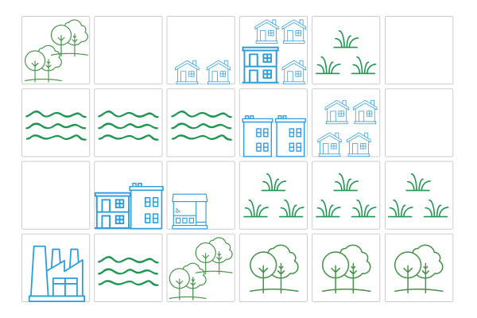
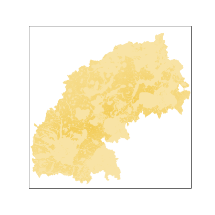
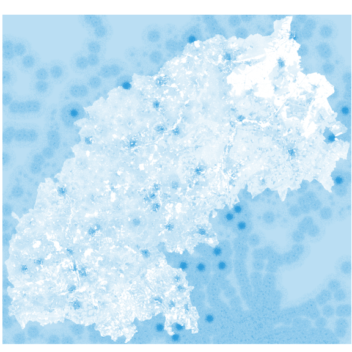
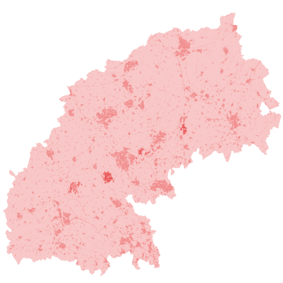

The Oxford Cambridge Arc in a region in south central England that runs between
Oxford and Cambridge via Milton Keynes and four major settlements including
Cambridgeshire, Bedfordshire, Buckinghamshire and Oxfordshire. The Arc area
contains some of the fastest growing and most productive towns and cities in
the UK. It is home to 3.7 million people, generating over 2 million jobs and
contributing over £110 billion of annual Gross Value Added (GVA) to the UK
economy per year. Explore the map below to see some of the boundaries and
transportataion across the Arc area.
Boundary:
Transport:
Density:
Future Development Scenarios
A report published in 2018 by the National Infrastructure Commission outlined
substantial plans to increase access and connectivity to the Arc area by 2050.
The Arc vision includes one million new homes across the Arc, an east-west
Expressway road, and improvements to rail routes connecting Oxford, Milton
Keynes Bedford and Cambridge. Yet there are many options and trade-offs that
need to be considered. In order to assess possible futures, four scenarios for
the Arc were identified: Baseline, Unplanned, Expansion, and New Settlements.
These scenarios represent future changes to the population, homes built,
location of homes, preservation of nature, density of land, and additional
factors.
Scenario:

In the baseline scenario development will be similar to what it is today.
Population will be based on recent growth rates and housing on recent average
dwelling completion rates. For transport there will be no new expressway or
East West Rail.
In the unplanneed scenario there is no overall spatial vision. Population
will increase marginally due to migration from increased employment near new
transport links. However housing will develop in an ad-hoc manner — larger
homes, more land take, dispersed. Both the Express Way and the East West rail
link will be developed resulting in an increase in emissions due to private
transport use and congestion.
In the new settlments scenario new cities will emerge. As a result,
population will increase due to inward migration. Housing will be
concentrated around existing cities with major growth in five new urban
conurbations (clusters of smaller cities). Smaller, more efficient homes,
optimal density. Both the Express Way and the East West rail link will be
developed but compared to the unplanned scenario there will be lower air
pollution due to decrease in private transport use, less congestion, and
increase in active transport.
In the expansion scenario existing cities will expand with high levels of
population growth expected due to inward migration. Major growth will happen
around existing urban centres with new dwellings divided among the major
conurbations. Extensive new developments will occur on brown and greenbelt
land, along with ongoing renovation/redevelopment of existing building stock.
Good intra-city transport systems will be built with both the Express Way and
the East West rail link developed. Despite development, there will be lower
air pollution compared to the unplanned scenario due to adoption of EVs,
public transport and decrease in private transport use, but high congestion.
The Urban Modelling Process
Using the future scenarios as a starting point, we can start to test out the
theories and assumptions made through computer-based simulations. While we
can’t fully capture every nuance about the future built environment, analyzing
and visualising the trade-offs can help planners and policy-makers make
informed decisions. One of the modals used to assess the Arc is called the
Urban Development Model (UDM). We will take a brief moment to explain the
general process of the UDM before showing the results applied to the Arc.
Overview of steps
Identify elements of the built and natural environment
Calculate current dwelling densities
Calculate ecosystem services
Identify constraints
Introduce future built environment features
Calculate attractiveness scores
Identify development suitability
Identify future dwelling density
Allocate future development
Calculate land use metrics
Explore:

First we audit existing urban land features (e.g. residential and
commercial/industrial buildings) and non-urban land features (e.g. green space
and habitats). We plot these features on a grid cell instead of administrative
boundaries that can vary in shape and size.
Based on the urban land features associated with building types, we calculate
the density per grid cell. Areas with more dwellings will have a higher
density. This is represented by the blue cells, where the darker blue
represents a higher density; the lighter blue the lower density.
Based on the non-urban land features associated with nature and habitats, we
calculate the value of each respective natural capital based on the ecosystem
services needed to help maintain that natural capital. For example, a verge by
the side of the road has value for ecosystem services like flood protection,
air quality, and recreation or exercise. This is represented by the green
cells, where the darker green represents more ecosystem services; the lighter
green the less ecosystem services.
Once we have an ideaa of the current built and natural environment, we can
start to identify constaints. Constraints are the limiting factors to urban
development such as historical sites or the desire to preserve green space.
While it’s great to have aspirations for growth, people also value the
protection of nature and wildlife and other considerations for development.
Therefore in this step we identify those constraints and then ‘block off’ cells
in the grid where we don’t want to build. This is represented by the grey
cells, where we mark an ‘x’ on the areas where we want to protext existing land
use.
The rest of the steps shift focus to future land use projections based on
policy plans. We layer on plans for new developments where there is a location
in place so that we can can test our assumptions. This includes things like new
rail stations, road nodes, settlement centres, etc. But we don’t include
individual homes just yet because we only know the total number of dwellings
for each scenario but not where they will be distributed. The location of the
new rail and roads are now added to the grid cell.
Before we can simulate where in the Arc people will migrate to, we need to find
out the areas best suitable for living. In this step we answer the question,
what will attract people to the Arc, and for each attracting factor, what
‘weight’ or level of attraction would we assign it? Examples of attractors
include proximity to employment or proximity to green space. Attractors can
vary based what people value. Therefore this process requires talking to
stakeholders to understand want we might want to evaluate (e.g. how far is each
location from jobs in the area?). Each cell now gets assigned a value of
attractiveness. For example promixity to railway stations may result in a high
attractiveness score for the cells in the area. This is represented by the
yellow cells, where the darker yellow represents high levels of attraction; the
lighter yellow the less attraction.
This step combines the previous two steps of attractors and constraints to
assess whether we should or should not build on a specific cell, and which to
prioritize? This measure of suitability considers the weight of each attractor
in step 5, and blocks off cells with constraints in step 6. The outcome is a
score for each grid cell. If a cell is constrained in any way it is considered
land unsuitable for development and gets a value of 0 (left empty). The rest of
the cells follow the same pattern as step 5 represented by the yellow cells,
where the darker yellow represents high levels of attraction; the lighter
yellow the less attraction.
Now that we know which cells to prioritize for development, we can figure out
how much we can actually build. In this step we assign different options based
on how many people can “fit” into undeveloped land, based on proximity to urban
centers or public transport. This is about making zoning decisions for where
people will live. In reality this tends to result in hotspots around town
centers and business districts with high density. the further from the hotspot,
the less density and less dwellings we can anticipate. This is represented by
the red cells, where the darker the red the more dwellings we can perceivably
build; the lighter red the less we build.
We run the UDM model to allocate future development at the identified densities
to the most suitable areas first. Given all the assumptions made (how many
people we want to move, where they might live, how many people can actually fit
in each grid cell of land), the result is a prediction for where development
will actually take place. This produces a map where each cell grid of land
represents future development with current development overlayed. We predict
where new homes will be built as they correspond will the hotspots of density
in the previous grid.
The final step is more about the translation of results into summary metrics
(e.g. how much land is used, ecosystems services lost, access to employment
gained, etc) in a way that helps government authorities and planners make
decisions. We’ve assumed that we will develop x amount of land in y places of
the cell grid, so what are the impacts of the development? What trade-off
conversations do we now need to have? Have we ended up building on most of the
plains? Is there a spawling effect? This is represented by replaced the cell
grids with administrative boundaries that map to different policy areas.
Applying Urban Modelling to the Arc Scenarios
Now that we have an understanding of the urban modelling process, let’s look at
how it was applied to the Arc. We will go through the process one step at a
time. For each step we will compare results at three different scales (Arc,
city, neighbourhood) in order to compare both the bigger picture and details.
Step 1: Current built and natural environment
Existing urban land features (in blue) and non-urban land features (in green).
Step 2: Current dwelling densities
Areas with more dwellings will have a higher density. This is represented by
the blue cells, where the darker blue represents a higher density; the lighter
blue the lower density.
Step 3: Ecosystem services in the Arc
Scale:
Aspects of natural capital in the Arc include parks, grasslands, woodlands,
verges, and any other aspect of green space, land uses, and habitats. The
darker green represents higher quality ecosystem services.
Step 4: Identify constraints
Constraint:
Scale:
We introduce constraints to protect nature, wildlife, historical landmarks, and
areas which are not feasible to develop. We “block off” these areas from
development.
Step 5: Identifying future built environment features
Transport:
Improvements to the transport links between Oxford and Cambridge are a key
aspect of the future vision for the Arc. Future plans include a new expressway
and East West Rail (EWR) will link Oxford and Cambridge. While the baseline
scenario would not see any changes, the other scenarios would have rail
stations and road nodes. New settlements would also include new settlement
centres.
Step 6. Calculate attractiveness scores
Attractor:
Scale:
Attractors are things that will drive more people in to the Arc. Such
attractors could include information on the performance of local schools, local
accessibility (distance) to shops, services or transport hubs.
Step 7. Suitability of land for development
Policy Scenario:
Dwellings Scenario:
Scale:

Based on the weighing of both the attractors and contraints, the output of the
UDM is a combined set of development suitability scores based on selected
spatial scenarios and the combination of attractors and constraints defined.
Each set of scores can then be represented as colours and displayed on a map to
show the changing patterns of land from a birds-eye-view lens.
Step 8. Future dwelling density
Policy Scenario:
Dwellings Scenario:
Scale:

What’s the required population density for new development? (in people per
hectare) This assessment determines the levels of population migration to and
within the Arc, given the relative attractiveness of different locations. We
will focus on one planning scenario. Then step 9, we just look at the small bit
of suitable area. Follow same pattern as attractors and constraints. Might just
be two scenarios. Maybe a different colour.
Step 9. Future development
Policy Scenario:
Dwellings Scenario:
Building Rate Scenario:
Scale:

What’s the required population density for new development? (in people per
hectare) This assessment determines the levels of population migration to and
within the Arc, given the relative attractiveness of different locations.
Step 10. Land use metrics
The final map shows the summary level selects (as opposed to grid level). Data
based on the boundaries people care about like LAD. Here you can get some
numbers about 9.
Include bar charts to compare/contrast between scenarios.
Conclusion
This work has been carried out by researchers at the University of Oxford and
Newcastle University in the UK, funded by the Alan Turing Institute (ATI), to
inform the analysis, planning and design of resilient national, regional and
local infrastructure across the world.